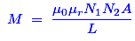
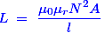
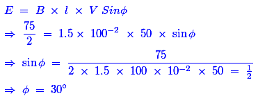

- Which of following circuit element stores energy in electromagnetic field?
Inductor stores energy in the electromagnetic field. Capacitor and condenser stores energy in the electrostatic field and resistance doesn’t store energy in any field.
- Emf induced in a coil rotating in a uniform magnetic field will be maximum when the
The rate of change of flux linkage is directly proportional to the induced EMF in a coil. Hence, the EMF is maximum when the rate of change of flux linkage is maximum.
- An emf of 16 volts is induced in a coil of inductance 4 H. The rate of change of electric current must be
- Which of following can induce the maximum induced voltage ?
If we apply a high frequency supply of the same peak voltage to the coil, the electric current still is being delayed by 90° but the time it requires to reach its maximum value has been reduced due to the increase in frequency. Because the frequency is inversely proportional to time (T). Hence, the rate of change of the flux within the coil has also increased due to the increase in frequency. Hence, the induced EMF is maximum in case of 1 amp 100 Hz supply source in the coil.
- The emf induced in a conductor rotating in bipolar field is
It is nothing but the EMF in a conductor in a rotating magnetic field is sinusoidal and alternating. It may be observed from the process of EMF generation in a conductor. In the initial position, the conductor is parallel with magnetic flux lines. So, there is no EMF. When it reaches perpendicular to flux lines, EMF generation is maximum. After that again it reaches the parallel path to flux lines. So, EMF is zero now. This same action happens again, but it is in reverse direction. So, again there is an EMF but is in negative direction. Hence, we get the sinusoidal waveform that has a bipolar field and that is nothing but the AC.
- In case of all flux from the electric current in coil 1 links with coil 2, the coefficient of coupling will be
If all flux from the electric current in coil 1 links with coil 2, then that is referred as an ideal transformer. For an ideal transformer, the coefficient coupling is 1.
- Mutually inductance between two magnetically coupled coils depends on
The expression of the mutual inductance between two magnetically coupled coil is as follows;

Where, μr - Permeability of core
N - The number of their turns
A - Cross sectional area of their common core
Hence, the mutual inductance depends on the all of the above factors. - The magnitude of the induced emf in a conductor depends upon on the
According to the Faraday’s law of induction, the magnitude of the induced EMF is nothing but the product of the number of turns of the winding and the rate of change of flux linkage in it. Hence, the induced EMF in a conductor depends on the rate of change of flux linkage.
- The property of the coil by which a counter emf is induced in it when the electric current through the coil changes is known as
Self induction is that phenomenon in which a change in electric current in a coil produces an induced emf in the coil itself.
- A coil is wound on iron core which carries electric current I. The self-induced voltage in the coil is not affected by
Induced emf in a coil is always equal and opposite to the applied voltage across it. It does not depend upon the number of turns of the coil. If we increase the number of turns of the coil from 2 to 200 induced emf across the coil would still be same and opposite of the applied voltage.
- Both the number of turns and the core length of an inductive coil are doubled. Its self-inductance will be
The expression of self inductance is as follows;

Now, if the number of turn is 2N and the core length of an inductive coil is 2l then self inductance will be 2L. - A conductor of length 100 cm moves at right angles to a magnetic field of flux density 1.5 Wb / m2 with a velocity of 50 m / s. The induced emf in the conductor will be
Given data:
Length (l) = 100 cm = 100 × 10-2 m; Flux density (B) = 1.5 Wb/m2; Velocity (V) = 50 m/s;
Then, the induced EMF (E) = B × l × V = 100 × 10-2 × 1.5 × 50 = 75 Volts - In above problem the induced emf will be reduced to half if the conductor moves an angle of
The expression of induced EMF with angle of field is,

Hence, the conductor moves an angle of 30° to the direction of field. - Self inductance of magnetic coil is proportional to
The expression of self inductance is as follows;
Hence, the self inductance of a magnetic coil is directly proportional to N2. - 1 Maxwell is the same as
1 Maxwell = 1 gauss × cm2 = 10-4 × (10-2)2 = 10-4 × 10-4 = 10−8 Weber.
- When a magnet is in motion relative to a coil the induced emf does not depend upon
The expression of induced emf in a coils is E = Blv.
Where,
B is flux density of the magnet,
l is length of the coil (if turns of the coil changes, then the length also changes) and
v is motion or velocity of the magnet.
Hence, the induced EMF does not depend upon the resistance of the coil. - The working principle of transformer depends on
The transformer is working under the mutual inductance principle. This principle is derived from the Faraday's law of electromagnetic induction. Hence, it depends on that principle.
- A copper disc is rotated rapidly below a freely suspended magnetic needle. The magnetic needle starts rotating with velocity
When the copper plate is rotated below a freely suspended magnetic needle, their will be a relative velocity between the field of magnetic needle and rotating copper disc. Due to this relative velocity, a circulating electric current will be induced inside the copper plate. According to the working principle of the induction motor, the needle start rotating in the same direction but in lesser velocity.
- The direction of induced emf can be found by
Lenz's law states that the induced electric current due to the induced emf always flow in such a direction as to oppose the change causing it. Hence, we can find the direction of induced EMF using Lenz’s Law.
- A coil with negligible resistance has 50 V across it with 10 mA. The inductive reactance is
The inductive reactance XL = [ Voltage / Current] = 50 / (10 × 10-3) = 5000 Ohms.
Design with  by SARU TECH
by SARU TECH
www.sarutech.com
Content Credited to electrical4u.com
Online Electrical Engineering Study Site